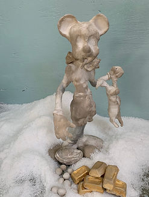
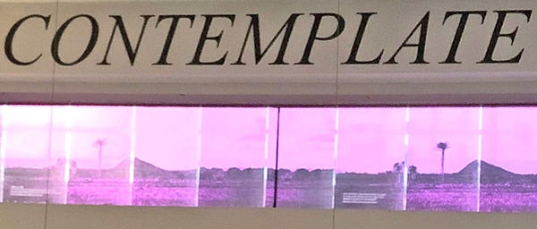

Subterranean Borders: Colonialism, Extraction and Defiance
September 14 - October 27, 2019
Curated by Ann Schnake
Artists: MobileInTent (Adan Alonso Gabriel, Victor Figueroa Infante, Ingrid Torres Espinoza, Robert Gomez Hernandez, Marlet Alejandra Martinez, Ann Schnake), Beatriz Escobar, Stacey Goodman, Kico Le Strange, Vasudhaa Narayanan, Veronica Rojas, Jamee Crusan
Subterranean Borders employs a long-distance lens for examining borders and ourselves, as the colonized, as colonizers, as the subjugated and the defiant. In this body of work, we push away the fog of historical amnesia to search beneath the surface: extraction of minerals, water, and labor; racist underpinnings for border claims; the long reach of colonialism into our bodies and dreams ….and then to the deep rumblings of counter forces, spirits from the past joining a cacophony of present defiance and possibility.
This body of work by twelve artists builds dream sequences and time travel of poetics and materialism. The exhibition can be approached from right to left, with the story of colonialism and extraction meeting the subterranean powers of defiance and de-colonization on the left. The exhibition continues through the hallway passage to the upstairs and back out to the sidewalk.
Our collective work holds that 500 years of the intersection of colonialism, racism, extraction and capital characterize our modernity. As we approach borders from the subterranean, we see whiteness as the first imaginary of the colonizer and as the underlying supremacist ideology in play at the border today. Since the search for the elusive El Dorado began in the sixteenth century, the history of Latin America has been a tale of greed and resource extraction. As Subcomandante Marcos of the Zapatistas says, "Another world is possible, a world that holds many worlds."
During the exhibition, we will be holding a series of Encuentros, or small gatherings, investigations dinners and events, as practical border actions and de-colonization of our imaginings.
 